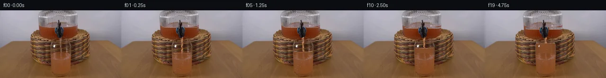

![首帧]()

Round 00
2026-11-06T10:13:54.578749+00:00像素候选变化代码 +213/−0inspection 更新
pixels 057bd0aa53542c53 · code a5ea1ff83a82bce8
查看本轮 generate.py 真实 diff
--- previous/generate.py
+++ current/generate.py
@@ -0,0 +1,213 @@
+"""PixelWorld case_0071 — beverage dispenser pouring grapefruit juice.
+
+Local pixel operations only. Frame 0 is an exact copy of first_frame.png;
+frames 1..19 animate the pour: rising glass level, sinking dispenser level,
+an animated stream with impact splash/foam, and sparse rising bubbles.
+All geometry/colours were measured from first_frame.png (see OBSERVATION.md).
+"""
+from pathlib import Path
+import numpy as np
+from PIL import Image
+
+import artifact_io
+
+CASE = Path(__file__).parent
+rng = np.random.default_rng(7107)
+
+f0 = np.array(Image.open(CASE / "first_frame.png").convert("RGB"))
+H, W, _ = f0.shape
+assert (H, W) == (144, 256)
+
+JUICE = np.array([135.0, 77.0, 41.0])
+STREAM_CLR = np.array([205.0, 132.0, 78.0])
+STREAM_CORE = np.array([235.0, 184.0, 138.0])
+FOAM = np.array([206.0, 162.0, 138.0])
+
+# ----------------------------------------------------------------------------
+# Scene constants measured from frame 0
+GL_L, GL_R = 108, 148 # tumbler interior walls
+GL_BOTTOM = 133 # last interior liquid row
+S0 = 91.0 # initial glass surface y
+S1 = 70.5 # final glass surface y
+DISP_L, DISP_R = 86, 163 # dispenser juice visible x-extent
+DISP_SKIP = (115, 135) # spigot occlusion columns
+D0, D1 = 35.5, 40.5 # dispenser surface start/end
+STREAM_X = 128
+
+# ----------------------------------------------------------------------------
+# Static "clean through-glass background" for the stream corridor.
+# Per-row horizontal interpolation between anchor strips on either side,
+# with fixed noise so the background is identical in every frame.
+corr = f0.copy()
+noise = rng.normal(0, 3.5, (93, 16, 3))
+for y in range(60, 93):
+ la = f0[y, 116:121].mean(0)
+ ra = f0[y, 134:139].mean(0)
+ for i, x in enumerate(range(120, 136)):
+ u = (x - 120) / 15.0
+ base = la * (1 - u) + ra * u
+ corr[y, x] = np.clip(base + noise[y - 60, i], 0, 255)
+
+# Empty-ribbed-glass texture for the dispenser as its level drops:
+# copy the clear-glass band 8 px higher (ribs are vertical).
+disp_bg = {}
+for y in range(36, 43):
+ disp_bg[y] = f0[y - 8].copy().astype(np.float32)
+
+
+def ease(u):
+ return 0.5 - 0.5 * np.cos(np.pi * u)
+
+
+def blend(dst, pos, color, a):
+ """Alpha-composite color at (y,x)."""
+ y, x = pos
+ dst[y, x] = a * np.asarray(color) + (1 - a) * dst[y, x]
+
+
+def inside_wall_shade(x):
+ """Cylinder darkening near glass walls, 1.0 at centre."""
+ c = (GL_L + GL_R) / 2
+ d = abs(x - c) / ((GL_R - GL_L) / 2)
+ return 1.0 - 0.10 * d * d
+
+
+def draw_frame(t):
+ """t in 0..19."""
+ u = t / 19.0
+ e = ease(u)
+ s = S0 - (S0 - S1) * e # glass surface (float)
+ ds = D0 + (D1 - D0) * e # dispenser surface (float)
+
+ fr = f0.copy()
+
+ # ---- dispenser reservoir level dropping ------------------------------
+ if t > 0:
+ top_empty = int(np.floor(ds - 0.5)) # rows that are now air
+ for y in range(36, top_empty + 1):
… diff truncated; 126 more lines …